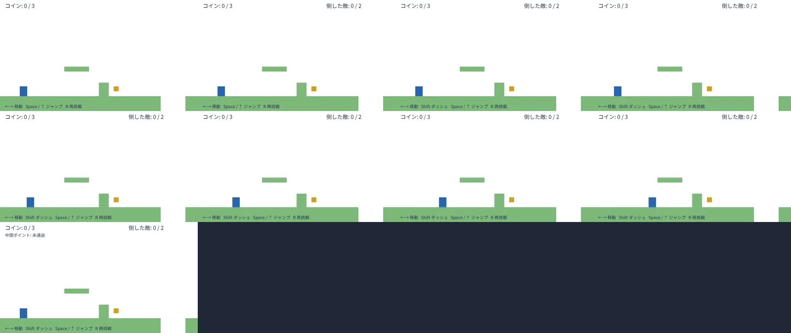
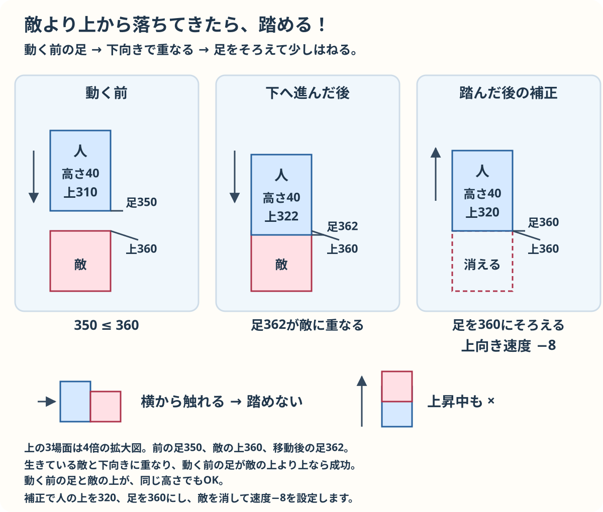
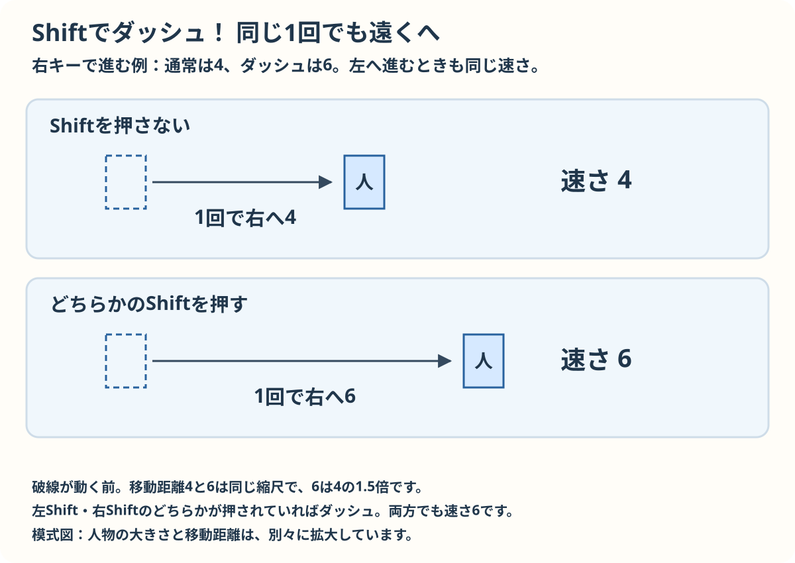
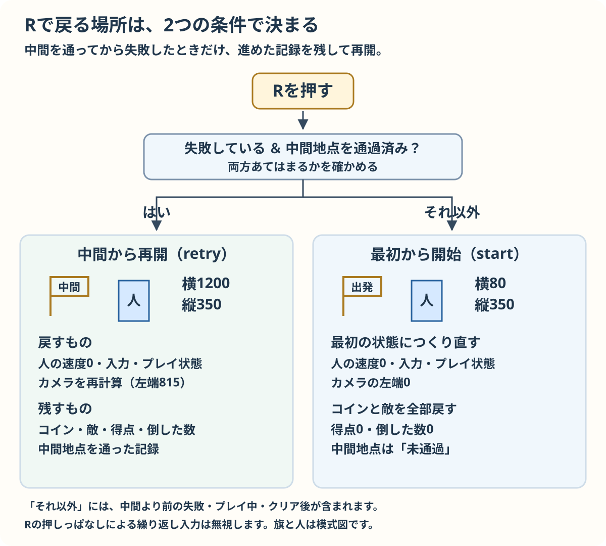

横スクロールゲームの発展課題
上級者向け・基本の6段階の次に
自分で作った横スクロールゲームに、遊び方を広げる機能を加えます。「敵を踏んで倒す」「ダッシュする」「中間ポイントから再挑戦する」の3つに取り組みます。
基本編では template/ の3ファイルから作り始めます。この発展課題は、基本編の完成版から続けます。
目標を読んだら、小さな作業を上から順に進めます。各作業には書く場所、実際のコードと、その意味を載せています。
始める前に
基本編の完成版から始めます。ZIPを展開してできたフォルダーでindex.htmlを開きます。ZIPには基本編の3ファイルが入っています。
WindowsでZIPを展開する（動画）
基本のステップ6まで作った作業用フォルダーを、別の名前でコピーしてください。コピーした script.js を編集します。index.html と style.css は変更しません。
基本版を持っていない場合は、examples/advanced/platformer/complete にある3ファイルを、新しい作業用フォルダーにコピーします。index.html、style.css、script.js は同じフォルダーに置いてください。
課題1から順番に追加します。各課題を終えたら保存し、作業用の index.html をブラウザで開くか、再読み込みしてください。見本のゲームは別ページで開きます。
発展課題 1：敵を上から踏んで倒す
このステップの見本を図で見る
vy>0 && 358<=360 → true
敵を倒し y=320、vy=-8
vy>0 && 390<=360 → false
失敗する
ゲーム画面とコードの前後を見る

このステップの見本
この行を足す前 変わったコードの一例（script.js）
if (player.vy > 0 && previousBottom <= enemy.y) {
見本で確かめること
敵の少し手前からジャンプし、敵の真上で移動キーを離して着地します。
保存してゲーム画面を更新する（動画）
index.html を再読み込みします。赤い敵を上から踏むと、その敵が消え、プレイヤーが少しはねるようにします。横や下から触れると、これまでどおり失敗です。
できるようにすること
- 落下中に敵の上へ着地したら、その敵だけを倒す。
- 倒した敵は動かず、描かれず、もう一度ぶつかることもない。
- 踏んだ後にはね、画面右上の「倒した敵」が 1 増える。
まず自分で考えよう
四角形が重なっているだけで、踏んだと決めてよいでしょうか。上から来たことを確かめるには、いつの足元を覚えればよいか考えてください。
倒した敵の数を用意する
script.js の次の行を置き換えます。
置き換える範囲
let coins, enemies, score;置き換えるコード
let coins, enemies, score, defeated;defeated は倒した敵の数です。コインの得点とは別に数えます。
敵ごとに生存状態を記録する
Enemy の constructor() の次の行の下に追加します。
目印
this.dx = 1;追加するコード
this.alive = true;alive は、その敵が生きていれば true、倒されていれば false です。各敵はそれぞれ自分の状態を持ちます。
倒した敵の移動を止める
Enemy.update() の開き波括弧の下に追加します。
目印
update() {追加するコード
if (!this.alive) return;! は真偽を反対にします。倒されていれば return でこのメソッドを終えます。
敵が踏まれたときの処理を加える
Enemy.draw() の前に追加します。
目印
draw(cameraX) {
ctx.fillStyle = "#d64b5c";追加するコード
stomp() {
this.alive = false;
}enemy.stomp() はその敵の alive を false にします。
倒した敵を描かない
Enemy.draw() の次の範囲を置き換えます。
置き換える範囲
draw(cameraX) {
ctx.fillStyle = "#d64b5c";置き換えるコード
draw(cameraX) {
if (!this.alive) return;
ctx.fillStyle = "#d64b5c";倒した敵は描画を始める前に処理を終えます。
踏んだ後にはねる
Player.draw() の前に追加します。
目印
draw(cameraX) {
ctx.fillStyle = "#2765b0";追加するコード
bounce(top) {
this.y = top - this.height;
this.vy = -8;
this.onGround = false;
}top は敵の上端の y 座標です。足元をそこにそろえてから vy を -8 にして上にはねます。空中なので onGround は false です。
倒した数を初期化する
start() の次の行の下に追加します。
目印
score = 0;追加するコード
defeated = 0;最初から遊び直すと倒した数も0に戻り、敵も作り直されます。
動く前の足元を覚える
外側の update() でプレイ中かを調べた直後に追加します。
目印
if (state !== "playing") return;追加するコード
const previousBottom = player.y + player.height;動く前の足元を覚え、敵の上から来たかを比べます。
敵を踏んだか判定する
外側の update() の敵との衝突処理を置き換えます。
置き換える範囲
if (overlaps(player, enemy)) state = "over";置き換えるコード
if (!enemy.alive || !overlaps(player, enemy)) continue;
if (player.vy > 0 && previousBottom <= enemy.y) {
enemy.stomp();
player.bounce(enemy.y);
defeated++;
} else {
state = "over";
break;
}生きた敵と重なり、下向きで、動く前の足元が敵の上端以下なら踏みます。例えば敵の上端が360なら、足元が350から362に進むと踏めますが、380から382ではすでに上端より下なので踏めません。cameraX は引かずステージ座標で調べます。横や下から触れたときは失敗です。
青はPlayer、赤はEnemy。青い枠は動く前、塗りつぶしは動いた後です。落下中でも、前の足元が敵の上端より下なら踏めません。
上からの例。落下中で、前の足元350が敵の上端360以下なので踏めます。敵が消え、プレイヤーは vy = −8 ではねます。
図をじっくり見る

説明用の例です。敵の上端は enemy.y = 360、プレイヤーの高さは40。前の足元は previousBottom = 350、動いた後は player.y = 322 なので足元は362です。図は上下の間隔を同じ縮尺で描いています。
前の足元が敵の上以下 350 <= 360、下向き player.vy > 0、overlaps と敵の alive がすべて true なら踏めます。踏んだ後は player.y = 320、vy = -8。横からや上昇中の接触は踏めません。
倒した数を表示する
外側の draw() のコイン数の表示の下に追加します。
目印
ctx.fillText("コイン: " + score + " / " + coins.length, 20, 32);追加するコード
ctx.fillText("倒した敵: " + defeated + " / " + enemies.length, 520, 32);倒した数と敵の総数を表示します。
保存して再読み込みし、敵を上から踏むと消えてはね返り、横から触れると失敗することを確かめます。
ヒントを見る
判定は次の3つに分けます。
overlaps(player, enemy)：今、敵と重なっている。player.vy > 0：今、下へ進んでいる。previousBottom <= enemy.y：動く前の足元が敵の上端より上か同じ高さにあった。
例えば敵の上端が y=360 の場合、足元が 350 から 362 に進むと、上端をまたぎます。一方、足元が 380 から 382 に進んだ場合は、すでに上端より下にいます。落下中でも、後者を踏んだことにはしません。
判定にはステージ全体の座標を使います。表示位置をずらす cameraX は引きません。
保存後の確かめ方
- 敵の少し手前からジャンプし、敵の真上で移動キーを離して着地します。敵が消え、プレイヤーがはねれば成功です。
- ジャンプせずに敵へ歩いてぶつかります。失敗することを確かめます。
- 倒した敵がいた場所へ戻ります。敵が現れず、倒した数も増えないことを確かめます。
- R キーで最初から遊び直します。2体の敵と、倒した数が戻ることを確かめます。
課題1まで追加した見本で遊ぶ見本の script.js を読む
小さな工夫
bounce() の -8 を -6 に変え、踏んだ後のはねる高さを比べてください。終わったら -8 に戻してから次へ進みます。
発展課題 2：Shift キーでダッシュする
このステップの見本を図で見る
このステップの見本
const dx = (right ? 4 : 0) - (left ? 4 : 0);
変わったコードの一例（script.js）const speed = (dashLeft || dashRight) ? 6 : 4;
見本で確かめること
同じ地面で、右キーだけの場合と、Shift と右キーを押した場合の速さを比べます。
課題1のコードに追加します。左右どちらかの Shift キーを押している間、横へ進む速さを変えます。
できるようにすること
- いつもは 1回の更新で 4、Shift を押している間は 6 だけ横へ進む。
- Shift を離すと元の速さに戻り、別のタブへ移った後もダッシュが残らない。
- ダッシュ中も壁にぶつかる判定と、敵を踏む判定が働く。
まず自分で考えよう
Player の update(terrain) にある 4 を、どんな値に置き換えればよいでしょうか。押しているキーを覚える仕組みも、左右移動のコードと見比べてください。
左右のShiftを記録する
script.js の入力状態の宣言の下に追加します。
目印
let left = false, right = false, jumpHeld = false, jumpPressed = false;追加するコード
let dashLeft = false, dashRight = false;左右の Shift を別々に記録します。両方を押して片方を離しても、もう片方の状態は残ります。
ダッシュの速さを選ぶ
Player.update() の次の行を置き換えます。
置き換える範囲
const dx = (right ? 4 : 0) - (left ? 4 : 0);置き換えるコード
const speed = (dashLeft || dashRight) ? 6 : 4;
const dx = (right ? speed : 0) - (left ? speed : 0);dashLeft || dashRight は左右どちらかの Shift が押されていると真です。押していれば速さ6、そうでなければ4を dx の計算に使います。ジャンプの vy と重力の0.5は変えません。

左右キーで進むとき、Shift を押していなければ速さ4、左右どちらかの Shift を押していれば速さ6です。dashLeft || dashRight で確かめます。両方押して片方を離しても、もう片方が押されたままなら速さ6です。
開始時にShiftの状態を戻す
start() の次の範囲の下に追加します。
目印
player = new Player();
left = false; right = false; jumpHeld = false; jumpPressed = false;追加するコード
dashLeft = false; dashRight = false;再挑戦のときに両方の状態を戻します。
Shiftの押下を記録する
keydown で右キーの次の行の下に追加します。
目印
if (event.code === "ArrowRight") right = true;追加するコード
if (event.code === "ShiftLeft") dashLeft = true;
if (event.code === "ShiftRight") dashRight = true;押された左右それぞれの Shift の状態を true にします。
Shiftを離したことを記録する
keyup で右キーの次の行の下に追加します。
目印
if (event.code === "ArrowRight") right = false;追加するコード
if (event.code === "ShiftLeft") dashLeft = false;
if (event.code === "ShiftRight") dashRight = false;離した側の状態だけを false にします。
画面を離れたら入力を戻す
blur の次の範囲の下に追加します。
目印
window.addEventListener("blur", () => {
left = false; right = false; jumpHeld = false; jumpPressed = false;追加するコード
dashLeft = false; dashRight = false;別のタブに移ったときも Shift の押下を消します。
ダッシュ操作を表示する
draw() の操作説明を置き換えます。
置き換える範囲
ctx.fillText("←→ 移動 Space / ↑ ジャンプ R 再挑戦", 20, 438);置き換えるコード
ctx.fillText("←→ 移動 Shift ダッシュ Space / ↑ ジャンプ R 再挑戦", 20, 438);画面の操作説明に Shift を加えます。
保存して再読み込みし、左右に進みながら Shift を押すと速くなり、離すと元に戻ることを確かめます。左右両方の Shift を押して片方だけ離す場合も試します。
ヒントを見る
速さを入れる speed を用意し、dx の計算に使います。ジャンプの vy や重力の 0.5 は変えません。
左右の Shift を一つの変数だけで覚えると、両方を押して片方を離した場合に困ります。dashLeft と dashRight を分け、どちらかが押されているか調べてください。
保存後の確かめ方
- 同じ地面で、右キーだけの場合と、Shift と右キーを押した場合の速さを比べます。
- 左右の Shift を両方押し、片方だけ離します。ダッシュが続くことを確かめます。
- Shift を離したとき、R キーで遊び直したとき、別のタブから戻ったときに、いつもの速さへ戻ることを確かめます。
- ダッシュして壁に向かい、通り抜けないことを確かめます。ジャンプ中に進む距離も比べます。
課題2まで追加した見本で遊ぶ見本の script.js を読む
小さな工夫
ダッシュの 6 を 5 に変え、操作しやすさを比べてください。終わったら 6 に戻してから次へ進みます。
発展課題 3：中間ポイントから再挑戦する
このステップの見本を図で見る
checkpoint.active=false → start()
最初から。コインも初期化
state==="over" && active → retry()
中間から。コインと倒した敵は残る
ゲーム画面とコードの前後を見る
このステップの見本
if (state === "over") ctx.fillText("ゲームオーバー！ R キーでもう一度", 180, 210);
変わったコードの一例（script.js）if (state === "over") {
見本で確かめること
目印に触れ、色と左上の表示が変わることを確かめます。
課題2のコードに追加します。ステージの途中に目印を置き、通過した後に失敗したら、その場所から遊び直せるようにします。
できるようにすること
- x=1200 の目印に触れると、色が変わり「通過済み」と表示される。
- 通過後に失敗して R を押すと、中間ポイントから再開する。取ったコインと倒した敵の記録は残る。
- 通過前の失敗、プレイ中、クリア後に R を押すと、全てを最初に戻す。
まず自分で考えよう
start() をそのまま呼ぶと、コインも敵も作り直します。途中から再開する場合に戻す値と、残す値を、先に書き出してみてください。
中間ポイントを用意する
script.js のゴールの次の行の下に追加します。
目印
const goal = { x: 2300, y: 310, width: 35, height: 80 };追加するコード
const checkpoint = { x: 1200, y: 310, width: 24, height: 80, active: false };左上が (1200, 310)、幅24、高さ80の目印を作ります。active は通過したかを記録します。
最初から始めると通過を戻す
start() の次の行の下に追加します。
目印
cameraX = 0;追加するコード
checkpoint.active = false;最初から遊ぶときは通過の記録を消します。
中間から再開する関数を作る
外側の update() の前に追加します。
目印
function update() {追加するコード
function retry() {
player = new Player();
player.x = checkpoint.x;
}新しいプレイヤーを作り、中間ポイントの x に置きます。
入力とカメラを戻す
retry() の次の行の下に追加します。
目印
player.x = checkpoint.x;追加するコード
left = false; right = false; jumpHeld = false; jumpPressed = false;
dashLeft = false; dashRight = false;
cameraX = Math.max(0, Math.min(WORLD_WIDTH - canvas.width,
player.x + player.width / 2 - canvas.width / 2));
state = "playing";キー入力を消し、カメラを再開位置に合わせてプレイ中にします。コイン、敵、score、defeated、通過の記録は残します。
中間ポイントへの接触を記録する
外側の update() でゴール判定の前に追加します。
目印
if (state === "playing" && overlaps(player, goal)) state = "clear";追加するコード
if (state === "playing" && overlaps(player, checkpoint)) checkpoint.active = true;プレイ中に目印と重なったら通過済みにします。
目印を描く
draw() のゴールの色を決める行の前に追加します。
目印
ctx.fillStyle = "#8455a5";追加するコード
ctx.fillStyle = checkpoint.active ? "#e6a817" : "#587b9a";
ctx.fillRect(checkpoint.x - cameraX, checkpoint.y, checkpoint.width, checkpoint.height);
ctx.fillStyle = "#26334a";
ctx.font = "17px sans-serif";
ctx.fillText("中間", checkpoint.x - cameraX - 5, checkpoint.y - 10);
ctx.fillText(checkpoint.active ? "中間ポイント: 通過済み" : "中間ポイント: 未通過", 20, 60);
ctx.font = "22px sans-serif";通過済みかどうかで色と表示を変えます。位置から cameraX を引いて画面に描きます。
失敗時の案内を切り替える
draw() の次の行を置き換えます。
置き換える範囲
if (state === "over") ctx.fillText("ゲームオーバー！ R キーでもう一度", 180, 210);置き換えるコード
if (state === "over") {
const message = checkpoint.active
? "ゲームオーバー！ R キーで中間から"
: "ゲームオーバー！ R キーでもう一度";
ctx.fillText(message, 180, 210);
}中間ポイントの通過後は、中間から再開する案内を表示します。
Rキーで再開場所を選ぶ
Rキーを調べる次の行を置き換えます。
置き換える範囲
if (event.code === "KeyR") start();置き換えるコード
if (event.code === "KeyR" && !event.repeat) {
if (state === "over" && checkpoint.active) retry();
else start();
}失敗して通過済みなら retry() で中間から、それ以外は start() で最初から始めます。event.repeat が真の押し続けによる繰り返し入力は受け付けません。

state === "over" && checkpoint.active なら retry() で中間から。それ以外は start() で最初からです。event.repeat が true の繰り返し入力は受け付けません。
中間から再開すると、プレイヤーの位置と速度、入力、カメラ、状態を戻します。コインと敵の状態、score、defeated、中間地点の記録は残ります。
保存して再読み込みし、中間を通過して失敗した後はRで中間から戻ることを確かめます。通過前の失敗とクリア後は最初から戻ることも試します。
ヒントを見る
途中から再開するときに戻すのは、プレイヤー、キー入力、カメラ、state です。コイン、敵、score、defeated、通過の記録は残します。
retry() という関数を作り、最初から遊ぶ start() と使い分けます。目印は、地面があり、壁や敵と重ならない場所に置いてください。
保存後の確かめ方
- 目印に触れ、色と左上の表示が変わることを確かめます。
- 目印の先のすき間へ落ち、R を押します。中間から再開し、それまでのコインと倒した敵の数が残ることを確かめます。
- R を押し続けても、中間から再開した直後に最初へ戻らないことを確かめます。
- 再開した後に R を一度離し、もう一度押します。プレイ中なので最初からになり、コイン、敵、通過の記録も戻ることを確かめます。
- 中間ポイントを通る前の失敗と、ゴール後にも R を試します。どちらも最初から遊べます。
課題3まで追加した見本で遊ぶ見本の script.js を読む
小さな工夫
中間ポイントを別の安全な場所に移してください。移動先に地面があり、再開するプレイヤーが壁や敵と重ならないか確かめます。
さらに自分で作るなら
3つを作れたら、次の中から一つ選んで計画を立ててください。ここからはコードの例を載せていません。変える場所と、成功したときの動きを先に書いてみましょう。
- 残り回数：失敗するたびに 1 減らし、0 になったら最初からにします。減らすのはどの関数か、R キーの長押しで何度も減らないかを考えます。
- 下からたたくブロック：Player の天井にぶつかる判定を使い、ブロックをたたくとコインが出るようにします。同じブロックから何度でも取れてよいかも決めます。
- 動く足場：足場のクラスを作り、左右へ動かします。プレイヤーが乗っている間、足場と一緒に動くにはどうすればよいかを考えます。